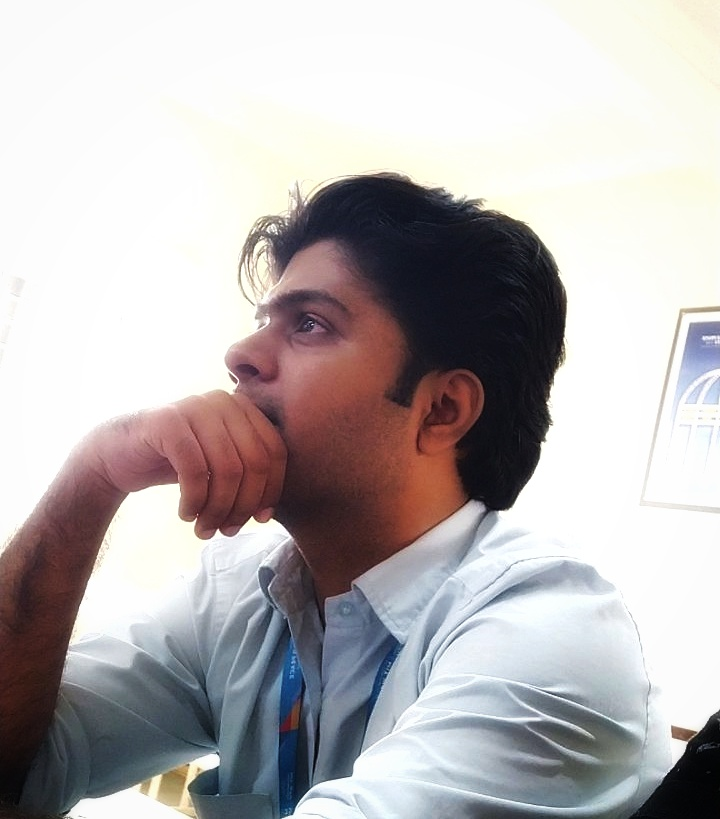

Anish Tatke, 22
Software Developer
Introduction
I am a Computer Science Engineer Gradutaed from MIT World Peace University, Pune. I have lived
in Pune since my birth. I have always been keenly interested in technology and computers since my
introduced them to me when I was young. I experimnted alot on these computers and various machines
and tried to find solutions to problems unknowningly. That motivated me to choose this field. I
have, since then, acquired a lot of knowledge and skill related to computers. Still, I feel the
hunger of grasping more information from this vast pool of knowledge. Since the freshman year of
my graduation timeline, I have implemented a lot of projects in various domains. This paricular
portfolio shows the overview of all the projects and the skills that I have implemented which have
helped me gain immense experience and various opputunities. I got the chance to work at a leading
healthcare and IOT based company called DeeDeeLabs Pvt Ltd. Here I worked as a intern for 3 months.
Currently I am working as a trainee intern in India's most leading company in the domain of AI-ML/Cloud
solutions.
My Work Section


My Skills
Object Oriented Programming
Database Management
Data Science and Artificial Intelligence
Web Design and Development
Projects
- Movie Booking System: A software application to book movie. The user booking registration is added in database. The project was Java and SQl based.
- Object Tracing Bot: A bot that traces a particular object of solid color. This is a IOT based project that makes use of Raspberyy Pi and other hardware mechanics. The software is written in Python.
- Covid Simulator: A Object oriented based Python project that simulates a spread of virus in a particular specified region for given time interval. Helpful in studying the behaviour of Corona Virus.
- Garbage Detection App: An App that can detect garbage and classify into given categories. The project is built on Tensorflow backend and Python. The application is a smooth Flutter based application.